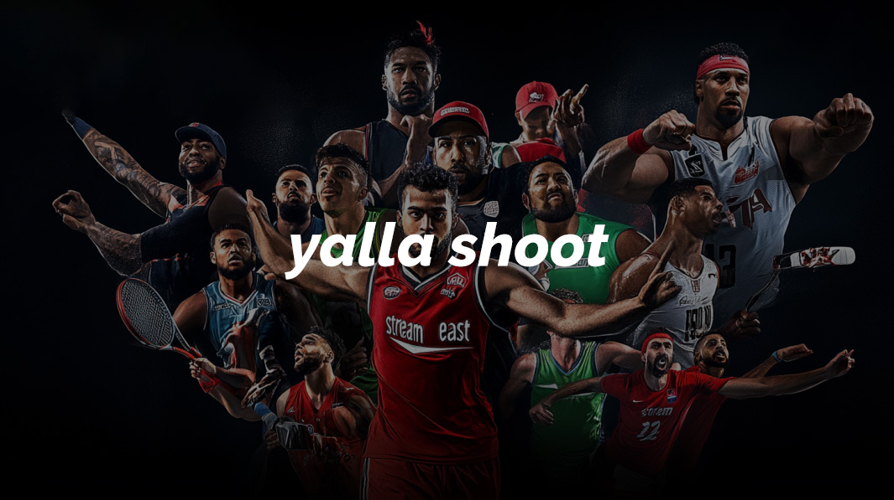

متعة كرة القدم مع yalla shoot: البث المباشر للمباريات
يعتبر yalla shoot الوجهة الأولى لعشاق كرة القدم لمتابعة المباريات مباشرة عبر الإنترنت. يقدّم الموقع روابط yalla shoot live وجودة عالية وخيارات yalla shoot for pc ومتابعة yalla shoot today دون تقطيع أو تأخير.

ما هو yalla shoot؟
yalla shoot هو منصة بث مباشر مختصة في نقل مباريات كرة القدم من الدوريات العالمية والمحلية. يوفّر yallashoot واجهة بسيطة وروابط بديلة لتفادي الانقطاع.
لأغلب المستخدمين، توفر روابط yalla shoot live أفضل تجربة بفضل سرعة الخادم وجودة الفيديو العالية.
ما هي ميزات yalla shoot today؟
yalla shoot today يوفّر جداول محدثة للمباريات وروابط متعددة لكل لقاء، مع تحكم في جودة الفيديو ودعم للغات متنوعة.
كيف يعمل yalla shoot live؟
يعتمد yalla shoot live على شبكة سيرفرات موزعة حول العالم لضمان استقرار البث وتقليل التأخير. عند انقطاع رابط رئيسي، يتحول تلقائياً إلى رابط احتياطي.
لماذا يختار المستخدمون yalla shoot؟
- مجاني بالكامل: لا يتطلب تسجيل أو اشتراك.
- متوافق مع الأجهزة: يعمل على yalla shoot for pc والهواتف الذكية.
- جودة عالية: بث HD وFull HD دون رسوم إضافية.
- روابط بديلة: متوفر عبر yalla-shoot.com وyalla shoot.io.
- سرعة استجابة: واجهة خفيفة وسيرفرات قوية لمشاهدة سلسة.
أعتبر yalla shoot الحل الأمثل للبث المجاني دون التضحية بالجودة.
لماذا يفضل المستخدمون yalla-shoot.com؟
يقدّم yalla-shoot.com تصميمًا واضحًا وروابط مصنفة بحسب الدوري والموعد، مما يسهل العثور على المباراة المطلوبة بسرعة.
كيفية استخدام yalla shoot لمشاهدة المباريات
- 1. زيارة الموقع: افتح yalla-shoot.com أو yalla shoot.io.
- 2. اختيار الدوري: حدّد الدوري أو البطولة من القائمة العلوية.
- 3. تحديد المباراة: اضغط على المباراة لرؤية جميع الروابط.
- 4. تشغيل البث: اختر الرابط الأنسب حسب جودة الإنترنت.
- 5. التبديل عند الانقطاع: استخدم الروابط البديلة فوراً لتجنب التأخير.
نصيحة: جرب رابطاً احتياطياً قبل انطلاق المباراة لضمان تجربة سلسة.
كيف أضبط yalla shoot for pc؟
لتشغيل على الحاسوب، يكفي فتح yalla-shoot.com في متصفح يدعم HTML5 دون الحاجة لتنزيل برامج إضافية.
مقارنة بين الروابط والنطاقات
| النطاق | الوصف | المزايا | روابط إضافية |
|---|---|---|---|
| yalla shoot website | البث الأساسي عبر الموقع الرسمي | سرعة تحميل عالية | yalla shoot today |
| yalla shoot today | نطاق احتياطي للمباريات اليومية | تحديث فوري | yalla shoot.io |
| yalla shoot.io | نطاق بديل بث ثابت | استقرار في البث | yalla-shoot.com |
| yalla shoot for pc | تشغيل الحاسوب عبر المتصفح | لا يحتاج تثبيت برامج | روابط داخلية احتياطية |
التنوع في النطاقات يضمن استمرار yalla shoot رغم إغلاقات بعض الروابط.
الخاتمة
في نهاية هذا الدليل، أصبح لديك كل ما تحتاجه لاستخدام yalla shoot لمتابعة مبارياتك المفضلة بجودة عالية ومجاناً. جرّب الروابط المختلفة واستمتع بالبث فوراً!
الأسئلة الشائعة (FAQ)
س1: هل yalla shoot مجاني حقاً؟
نعم، yalla shoot مجاني تماماً ولا يتطلب تسجيل أو اشتراك.
س2: هل أحتاج برامج إضافية لاستخدام yalla shoot for pc؟
لا، يكفي فتح الموقع في متصفح يدعم HTML5.
س3: ماذا أفعل إذا انقطع البث؟
استخدم الروابط البديلة المتوفرة على yalla shoot today أو yalla shoot.io.
س4: هل تتغير جودة البث حسب سرعة الإنترنت؟
نعم، تتكيف الجودة تلقائياً مع سرعة اتصالك لضمان استمرارية المشاهدة.
س5: كيف أجد مباريات الدوري المفضل لدي؟
استعن بقائمة الدوريات في أعلى الصفحة لاختيار الدوري المطلوب.
س6: هل يمكنني المشاهدة على هاتفي الذكي؟
بالتأكيد، yalla shoot متوافق مع جميع الهواتف عبر المتصفح.
س7: هل هناك تطبيق رسمي لـ yalla shoot؟
حالياً لا يوجد تطبيق رسمي، لكن الواجهة عبر المتصفح توفر تجربة ممتازة.